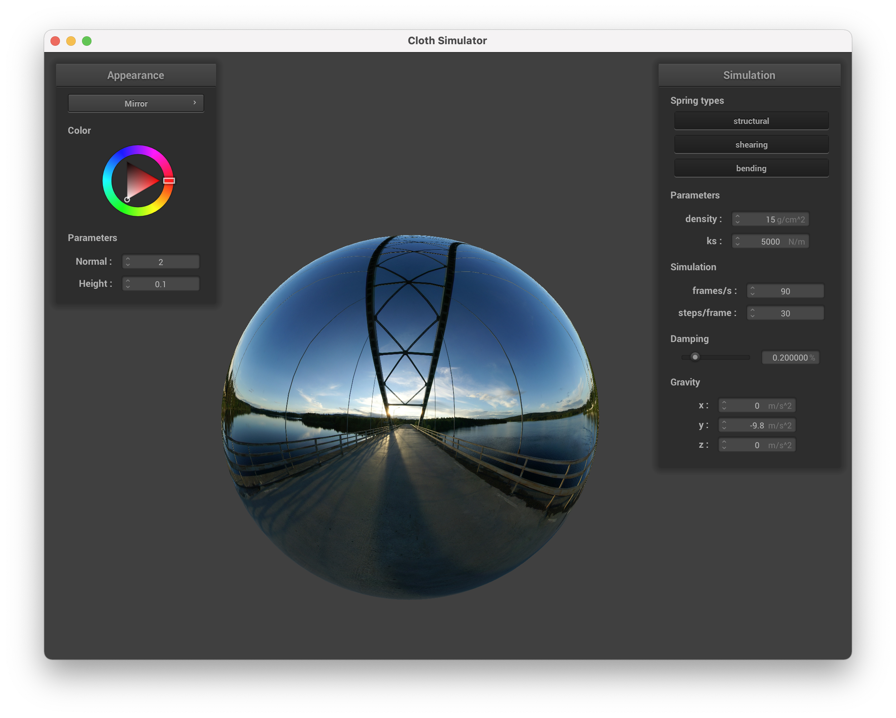

Overview
In this project, we built the cloth from scratch. In part I, we built the masses and springs which mimic the wireframe of the cloth. Then in part II, III and IV, we added the simulation to the cloth, including basic simulation, collision and self-collision. The last part we did was to add shading and texture to the cloth to make it more real. Overall, we learnt how each simulation is implemented using just masses and springs. Also, we learnt how to apply our previous knowledge about shading on to a real-time simulation.
Part I: Masses and springs
Take some screenshots of scene/pinned2.json from a viewing angle where you can clearly see the cloth wireframe to show the structure of your point masses and springs.
|
Screenshot 1
|
Screenshot 2
|
|
Screenshot 3
|
Show us what the wireframe looks like (1) without any shearing constraints, (2) with only shearing constraints, and (3) with all constraints.
|
1) without any shearing constraints
|
2) with only shearing constraints
|
|
3) with all constraints
|
Part II: Simulation via numerical integration
Experiment with some the parameters in the simulation. To do so, pause the simulation at the start with P, modify the values of interest, and then resume by pressing P again. You can also restart the simulation at any time from the cloth's starting position by pressing R.
Describe the effects of changing the spring constant ks; how does the cloth behave from start to rest with a very low ks? A high ks?
|
Small ks ($500 N/m$)
|
Large ks ($50000 N/m$)
|
We can see that larger ks will make the cloth more flat. The small ks will make the cloth be curved and the large ks will make the cloth be mostly flat.
What about for density?
|
Large density ($150 g/cm^2$)
|
Small density ($1.5 g/cm^2$)
|
We can see that smaller density will make the cloth more flat. The large density will make the cloth be curved and the small density will make the cloth be mostly flat.
What about for damping?
|
Large Damping ($0.667 \%$) (beginning)
|
Large Damping ($0.667 \%$)
|
|
Small Damping ($0.023 \%$) (beginning)
|
Small Damping ($0.023 \%$)
|
We can see that smaller damping will make the cloth less stable. The small damping will make the cloth be bounced back & forth when released and a little more curved in the final state. And the large damping will make the cloth be mostly stable when released.
For each of the above, observe any noticeable differences in the cloth compared to the default parameters and show us some screenshots of those interesting differences and describe when they occur.
Show us a screenshot of your shaded cloth from scene/pinned4.json in its final resting state! If you choose to use different parameters than the default ones, please list them.
Resting state
Part III: Handling collisions with other objects
Show us screenshots of your shaded cloth from scene/sphere.json in its final resting state on the sphere using the default ks = 5000 as well as with ks = 500 and ks = 50000. Describe the differences in the results.
|
ks = 5000
|
ks = 500
|
|
ks = 50000
|
We can see that different ks will have effect on the cloth. Larger ks would make the cloth be more spread-out and more stretchy. Smaller ks would make the cloth closer to the sphere.
Show us a screenshot of your shaded cloth lying peacefully at rest on the plane. If you haven't by now, feel free to express your colorful creativity with the cloth! (You will need to complete the shaders portion first to show custom colors.)
Plane
Part IV: Handling self-collisions
Show us at least 3 screenshots that document how your cloth falls and folds on itself, starting with an early, initial self-collision and ending with the cloth at a more restful state (even if it is still slightly bouncy on the ground).
Vary the density as well as ks and describe with words and screenshots how they affect the behavior of the cloth as it falls on itself.
|
Low Density ($3 g / cm^2$)
|
High Density ($100 g / cm^2$)
|
Density: We can see that the cloth with lower density is more stretchy. Also, the area it covered when touching the planes is larger.
|
Low KS ($2000 N/m$)
|
High KS ($50000 N/m$)
|
KS: We can see that the cloth with higher ds is more stretchy. Also, the area it covered when touching the planes is larger.
Part V: Shaders
Explain in your own words what is a shader program and how vertex and fragment shaders work together to create lighting and material effects.
A shader program is a set of instructions for a GPU to render 3D objects in real-time graphics. It runs in parallel on GPU,
executing sections of the graphics pipeline, taking an input, and outputting a single 4 dimensional vector. Vertex shaders
transform object positions, modifying their geometric properties like position and normal vectors, writing the final position of
the vertex, and writing varyings for use in fragment shaders. After rasterization, we end up with fragments, which fragment shaders process. Fragment
shaders take in geometric attributes of the fragment calculated by vertex shaders to determine pixel color.
Explain the Blinn-Phong shading model in your own words. Show a screenshot of your Blinn-Phong shader outputting only the ambient component, a screen shot only outputting the diffuse component, a screen shot only outputting the specular component, and one using the entire Blinn-Phong model.
The Blinn-Phong shading model is a lighting model used in computer graphics to create realistic shading and lighting effects on 3D objects. It is a
modification of the Phong shading model, which calculates the color and intensity of each pixel on an object's surface based on
its orientation and the direction of light sources. The Blinn-Phong model extends the Phong model by also taking into account the angle between
the viewer and the surface of the object. This allows the model to simulate specular highlights on shiny surfaces and make them appear more
realistic.
|
the ambient component
|
the diffuse component
|
 the specular component
the specular component
|
the screenshot with the Blinn-Phong model
|
Show a screenshot of your texture mapping shader using your own custom texture by modifying the textures in /textures/.
the screenshot with ocean texture
Show a screenshot of bump mapping on the cloth and on the sphere. Show a screenshot of displacement mapping on the sphere. Use the same texture for both renders. You can either provide your own texture or use one of the ones in the textures directory, BUT choose one that's not the default texture_2.png. Compare the two approaches and resulting renders in your own words. Compare how your the two shaders react to the sphere by changing the sphere mesh's coarseness by using -o 16 -a 16 and then -o 128 -a 128.
|
bump mapping (sphere)
|
bump mapping (cloth)
|
|
displacement mapping (sphere)
|
displacement mapping (cloth)
|
Bump mapping is a technique that creates the illusion of bumps and dents on an object by perturbing surface normals, while displacement mapping modifies the position of vertices to reflect the height map in addition to modifying the normals to be consistent with the new geometry. From the pictures shown above, we can see that bump mapping doesn't affect the general silhouette of the sphere and the cloth. However, displacement mapping changes the geometry of the sphere and the cloth, resulting in a much more dramatic effect on the appearance of the object.
|
bump mapping (sphere) -o 16 -a 16
|
bump mapping (sphere) -o 128 -a 128
|
|
displacement mapping (sphere) -o 16 -a 16
|
displacement mapping (sphere) -o 128 -a 128
|
The pictures above show how the two shaders react to the sphere by changing the resolution. For bump mapping, as we change the resolution from 16 to 128, there is no noticeable change in the shape of the sphere. However, for displacement mapping, as we change the resolution from 16 to 128, the displacement of vertices becomes more significant, as we can see from the contour of the sphere.
Show a screenshot of your mirror shader on the cloth and on the sphere.
|

mirror shader (sphere)
|
mirror shader (cloth)
|